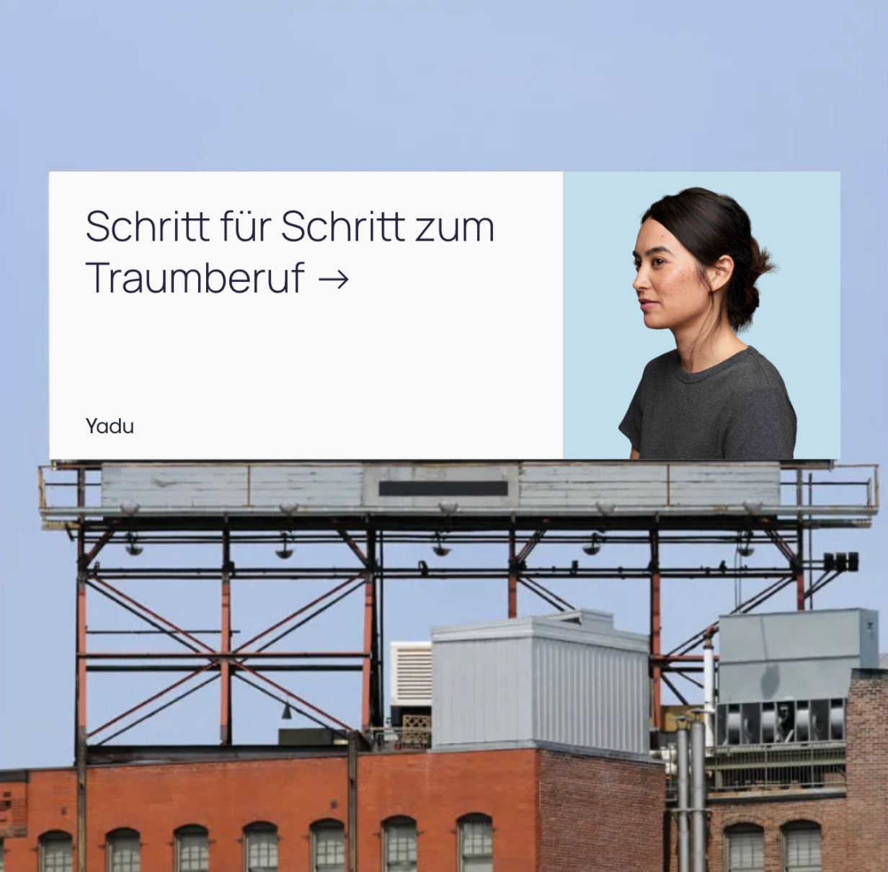
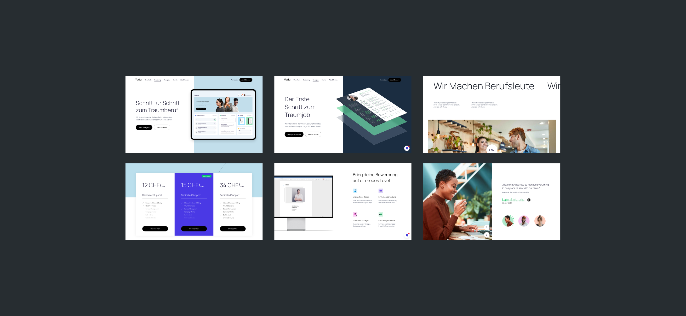
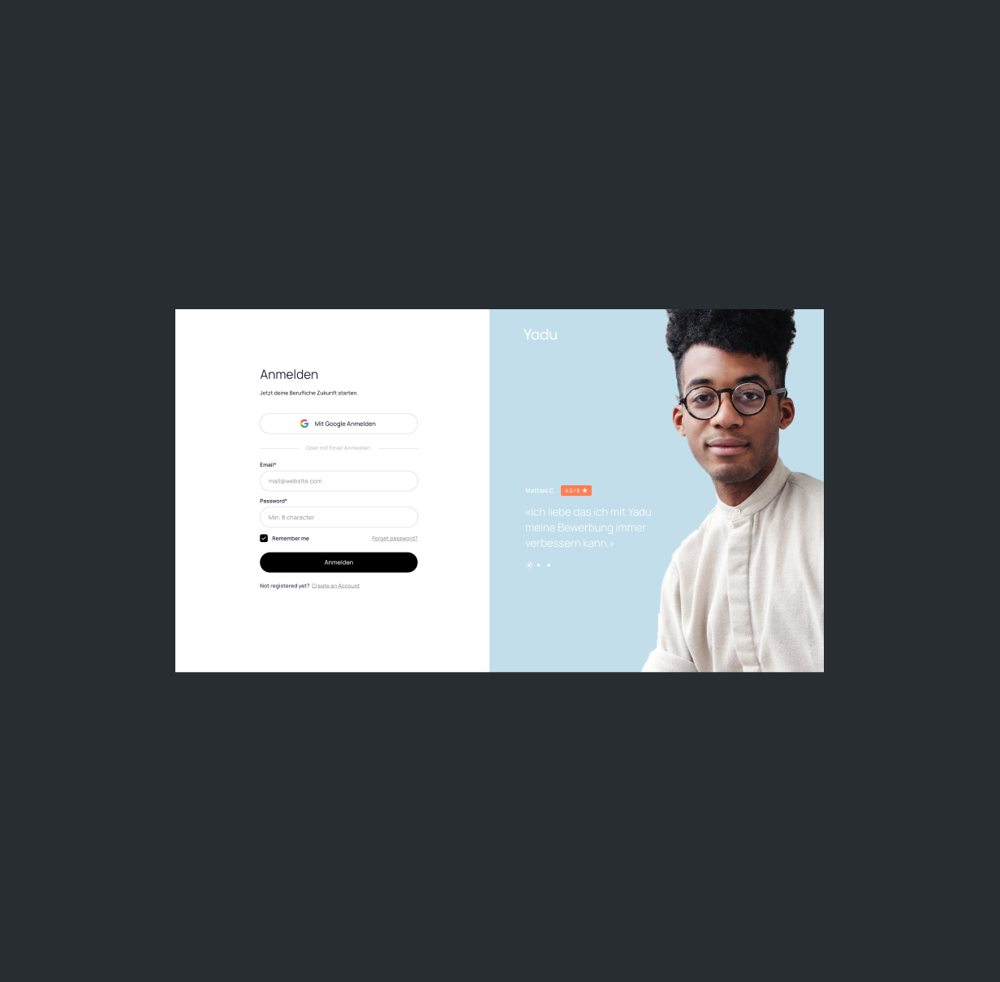
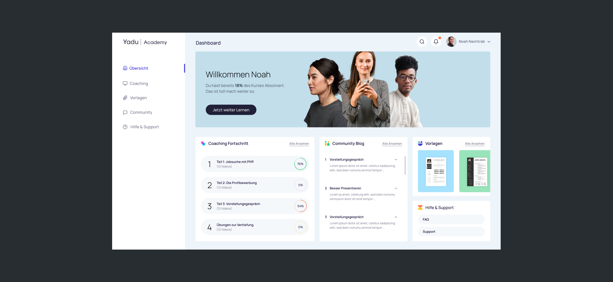
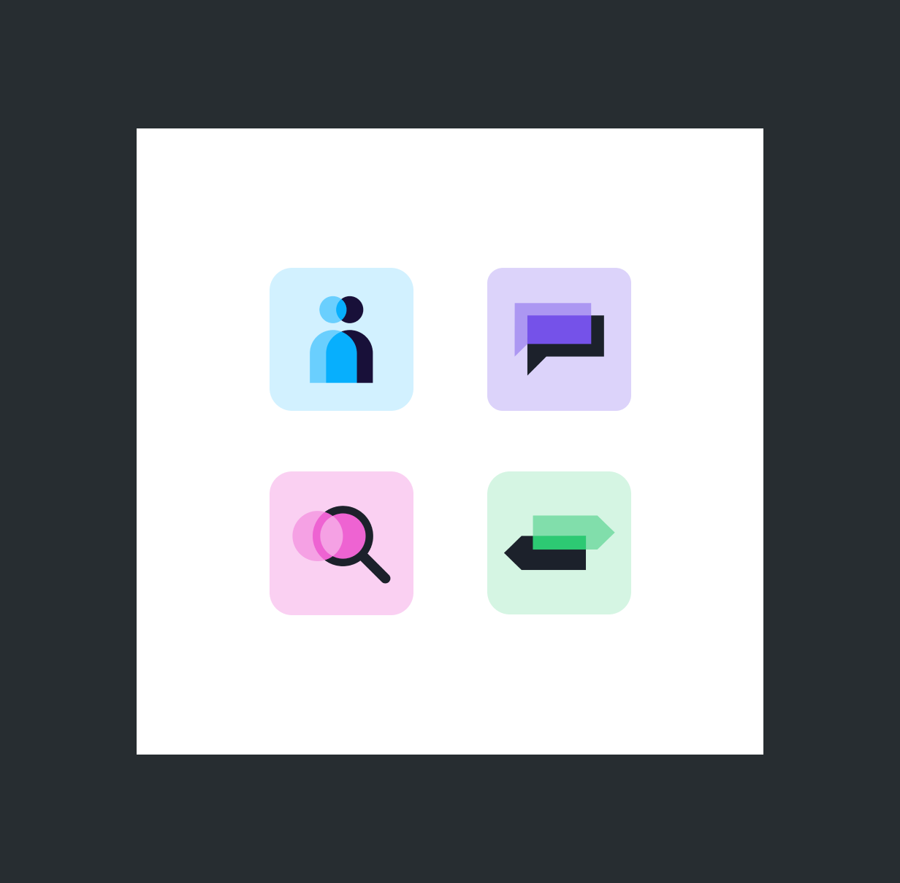
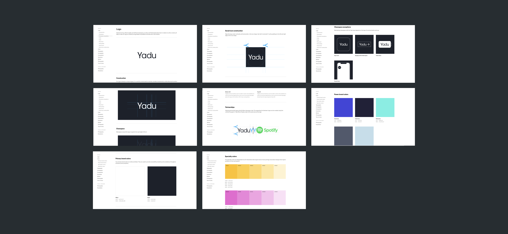

Yadu - The first step into the professional world.
Project Details
Description
Yadu empowers new professionals to embark on a transformative journey of self-discovery, exploration, and ultimately secure their dream job. A platform was created for this purpose, allowing users to further their education independently and find all the information they need for career planning and job application processes.
Our Work
Visual Identity
Design System
Product Design
UX Research
Client
Yadu






Other projects